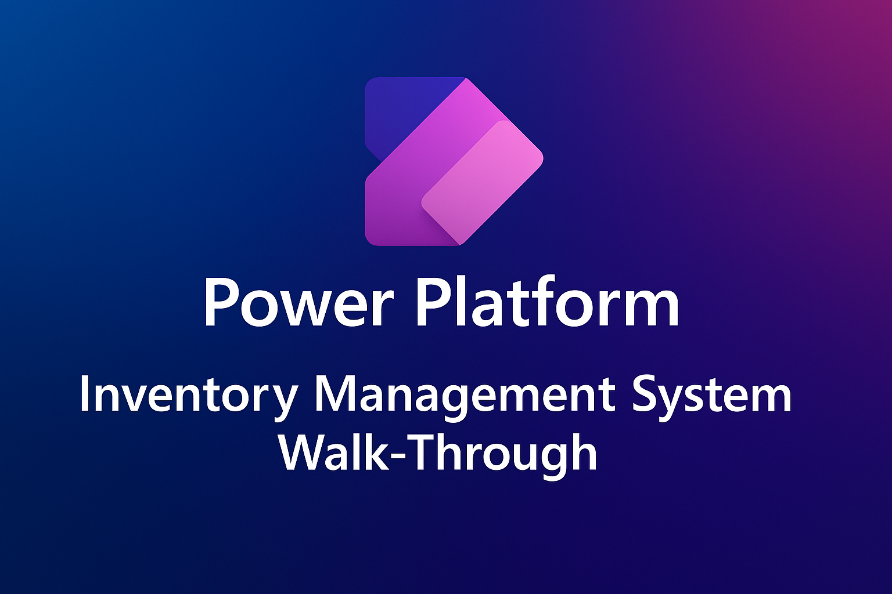

Power PlatformCanvas + Model-driven
Inventory Management System
Designed an inventory management solution in Power Platform, combining a Canvas app with a refined Model-driven interface for a more intuitive operational experience.
Watch walkthrough →